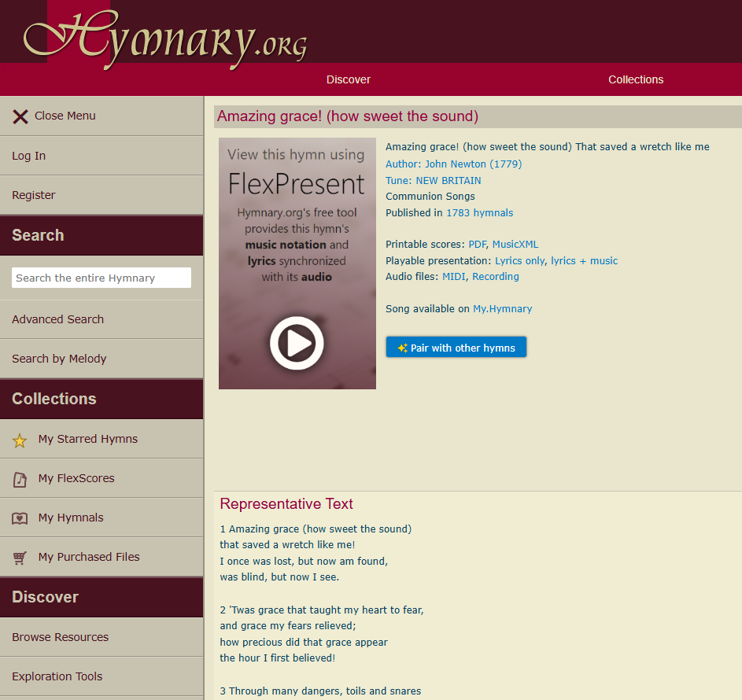
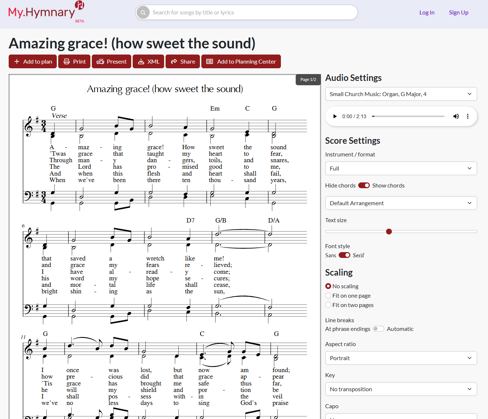

Brandon Baker
A passionate software engineer who loves to make things.
Brandon Baker
A passionate software engineer who loves to make things.
- Good Communication
- Problem Solving
- Building Relationships
- Growth Mindset
- Teamwork
- Open Ears
Development Experience and Projects
Work Experience
-

Hymnary.org is one of the largest database of hymns on the whole internet, serving roughly 6.5 million users per year. At Hymnary, I worked on developing features and functionality to improve the user experience of worship leaders looking to organize their next service, or curious about information from a specific text. I added functionality to an existing LAMP stack and maintained internal servers.
Web Developer and Server Administrator

-
My.Hymnary.org is an extension of Hymnary.org, it builds off of hymnary's hymn foundation/database but extends the accessibility and functionality of hymnary.org. Similar to my work on hymnary, I added functionality to this website and fixed any bugs that had arose.
Web developer and Server Administrator

-
Used Appium testing suite to ensure product works as intended. Gained experience working with full-time developers in a scrum environment. Wrote Tests for one of Gentex many well known mirrors connectivity app as well as the smoke detector in the Place App.
Software Testing Engineer Intern

-

Ace Pickleball Club is a community of people who love pickleball, pickleball training hub, and your all in one for growing community in America's fastest growing sport, pickleball. Although this isn't a traditional developer role, I was able to step into a leadership role and try something new. I trained member specialists to cultivate community, coached pickleball, and ran behind the scenes operations to ensure the facility ran smoothly.
Assistant General Manager

Projects
-
Chess
Who doesn't love chess? This game is a classic mix of strategy, problem solving, and rivalry all in one. Written in Java using its GUI, this project practices object oriented programming, inheritance, and basic logic functions for the pieces functionality. JUnit Testing was also done to ensure pieces moved expectantly.
-
Our Kitchen
Ever want to share a recipe with friends but didn't want to go through the hassle of typing out the long list on your phone. Our Kitchen allows users to not only save a recipe, but to collaborately share and learn recipe from other chefs. This app was written using Vue and TS.
-
Loot Raiders
Growing up playing video games almost non-stop, I don't know who wouldn't want to play around with a game engine to make their own. Loot raiders lays the foundations of a game where an adventurer's goal is to reach the treasure by navigating the obstacles in his path. This game was written in the Unity game engine using C# scripting.
-
Zork
A recreation of the original Zork game where players use "normal" sentences to direct where they would like to explore until the goals are accomplished. This recreation was written in C++ to explore the language and fundamental concepts.
-
Star Wars Galaga
This game is a classic, retro shooter arcade game. The goal is to destroy the bugs and survive the longest you can, accumulating the highest score. This project helped me familiarize my object oriented skills in Java to Python, the more "readable" language.
Upcoming Projects
-
Bible Guesser
Faith is important. Memorizing scripture can be tough sometimes, but who doesn't love to test their knowledge of scripture with a game. Inspried by daily challenge games like wordle, bible guesser puts a spin on it and allows users to guess which Book, Chapter, and Verse a randomly pulled verse came from.
-
Find A Hobby
Ever catch yourself bored at home, wondering what to do next? This web app is designed to point you to your next favorite addiction. There are so many things to try nowadays and not enough resources to tell you flat and simple without reading a long list that you'll forget tomorrow.
-
Pickleball Paddle Finder
Pickleball is currently America's fastest growing sport. Why? Community, competition, and that addictive feeling when you hit the ball over the net or get a long rally. To get a good rally you'll want a paddle that suits your playstyle well. This website allows users to find their dream paddle with their desired specifications quickly. Then points you to where you can buy the paddle.
My Story
I'm a problem solving software engineer. When I start something, I don't quit until the job is finished. Growing up in Ada, MI I knew I didn't exactly know what I wanted to do growing up, all I knew was I was good at math and was absessed with video games. Then I discovered something in high school, programming. I didn't think much of it but figured I would try Computer Engineering in college since it involed, logic, computers, and math (or so I thought). Little did I know what would be waiting for me. After a couple years in CE, I decided I wasn't interested in hardware and loved the coding aspect so I switched my major to Computer Science altogther. After thinking this switch was going to be sunshine and rainbows based on my impression from the begineer courses, I quickly found out, that you would be thrown off a couple ledges into the deep end before things really made sense. I graduated from Grand Valley State University with a Computer Science degree in April 2024 and began that "dreaded" job hunt that all new recent grads had to do. In July, I landed a job as an independent contractor at Calvin working as a Web developer and server administrator. Very quickly, I figured out how steep the learning curve was in software engineering, and learned a few life lessons from this experience. I left about a year later to pursue another passion of mine, Pickleball. I began working at Ace Pickleball Club as a leader. I was their Assistant General Manager and began a career in something that I didn't know I was cut out for on top of working around the hobby I love. About 9 months later, things turned south, and I wanted to keep pickleball a hobby and pursue another dream, Christian content creator telling people about Jesus online. After a couple months, I experienced serious burnout and felt like I was at the end of the road. Little did I know, I would rediscover my passion for programming again. After a little over a year out of the development space, I had to relearn many computing concepts that I surely thought I would never touch again. Starting with HTML, CSS, and JavaScript, I slowly started diving back into web development and realized all of the really crafty things you can do with software. Coming from a faith background, I love to help people and build relationships with others. After this year away from software, I realized that software is one of the many ways you can do that. Whether that be building a website for someone, teaching someone a cool coding trick, or helping someone else find the right connections, the software space has a lot more to offer than I originally thought. Currently I'm pursuing a dream I thought I had left in the past to help others, build cool programs, and grow as an individual. Thank you for reading this far, you are appreciated, and seriously, thank you for the work you do in helping others!
Part-time pickleball addict
When I'm not working, I'm doing a handful of things, but most of the time, I'm playing pickleball. I remember the first time I learned to play, one of my buddies from my Discrete Math class asked me to play at a popular public park, belknap, aka the Pickleball hub of Michigan. I clearly remember getting pickled the first game we tried to hop on a court right after he had taught me all the rules (for those unfamiliar, we didn't get a single point). But something clicked, I became addicted to a sport I wasn't familiar with, and then began teaching it to all my other friends so we could all play together. When I was at Grand Valley, I took over the pickleball club as President and grew a dying community by the lakeshore from 6-8 regular members to roughly 35, even after everyone's busy schedules. Shortly after graduating, I had a lot of free time and decided to go to Belknap park regularly during their open play where people go there, mix in, and expect to get some games. This fueled my pickleball addition and kept me coming back. I would go by myself, meet a new friend, then go home, until it got to the point where I knew all the regulars there and became part of the community. To this day, I regularly go, play with friends, enjoy the community, and compete in tournaments just under the semi-pro level. I'm extrememly grateful for all this sport has brought me all from an invite to try something new.
Video Game Enthusiast
Ever since I could remember, I've been a gamer. From playing mario kart wii in my elementary days to having my very own ipod touch, I've been fascinated (and addicted to) gaming. Usually, you'll catch me on some form of shooter like Marvel Rivals, Fortnite, and almost every other game you could imagine, but sometimes you'll catch me on a party game like lethal company or peak. Being a gamer at heart, I've dabbled a little bit in game development with Unity but never really fully invested in it yet. I'm sure at one point I'll sit down and make my own game to publish on steam, but for now, I enjoy the little things that other game developers have created to have a chill sesh with some friends and catch up on life.